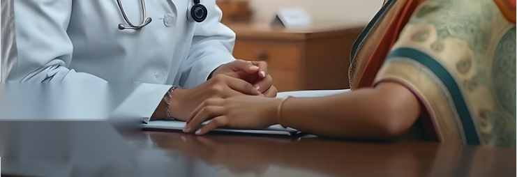

Allergies
Recurring symptoms such as sneezing, itching and nasal congestion.
Individual consultations built around your symptoms, health history and everyday routine, with time to listen and explain.

At Dr. Aarav Homeopathy Clinic, every consultation starts with understanding the person behind the symptoms. We take time to discuss your concerns, health history, lifestyle and expectations.
The clinic is set up for unhurried consultations, clear communication and planned follow-ups.
Consultations are individualised, and outcomes vary from person to person.
Recurring symptoms such as sneezing, itching and nasal congestion.
Review of headache patterns, triggers and daily routine.
Consultation around acidity, bloating and irregular digestion.
Discussion of recurring irritation, dryness and rashes.
Assessment of ongoing stiffness and everyday aches.
A conversation about rest, stress and daily routine.
Homeopathy is a complementary system of care. For emergencies or serious conditions, seek appropriate medical attention.
BHMS, MD (Homeopathy)
Every consultation should leave a patient feeling heard, informed and clear about the next step.
With more than ten years of clinical experience, Dr. Aarav focuses on careful case understanding and straightforward communication.
More about Dr. AaravChoose a convenient date and time. Our clinic team will contact you to confirm your request.